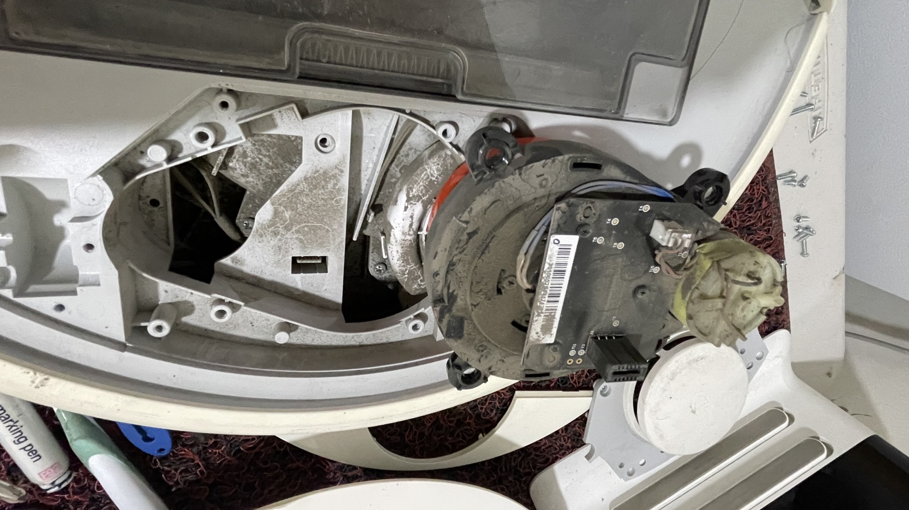
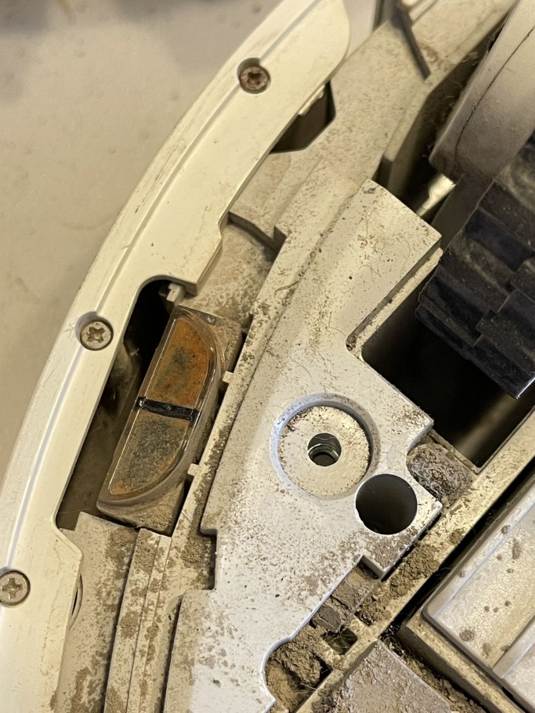
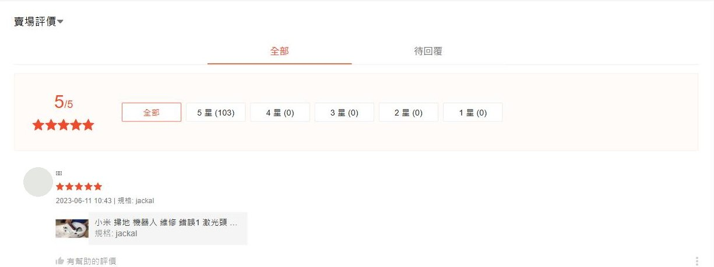

提供線索
拍下完整型號、錯誤畫面，再錄一段故障發生時的短片。
新北・蘆洲｜預約親送・寄修詢問
停住、迷路，或是沒電了。
先聊聊掃地機的狀況，一起找出下一步。
先確認型號與症狀
查明問題、確認報價，再決定維修。

01 ／ 維修方向
不必先知道壞了哪個零件。
從你看見、聽見的狀況開始。
錯誤 1、原地打轉、啟動後停住。先記下錯誤訊息與機器的動作。
聊聊這個狀況掃一半斷電、離座就關機、錯誤 13。主機和充電座都可能需要檢查。
聊聊這個狀況輪皮老化、輪子卡住、行走偏向一側。照片有助於分清楚外皮與輪組問題。
聊聊這個狀況找不到家、到充電座前卻對不準。請錄下完整回充過程。
聊聊這個狀況主刷或邊刷不轉、運轉聲變大。先確認聲音在什麼動作時出現。
聊聊這個狀況新機型可先詢問，查修後再決定是否承接；請提供主機與基站完整型號。
聊聊這個狀況實際受理項目依機型、料件與檢查結果確認；仍在原廠保固內，建議先洽原購買通路。
02 ／ 先聊聊
維修小幫手會依常見維修經驗，協助你整理要提供的資訊。從型號、錯誤碼，或一個簡單的症狀開始就好。
小幫手提供初步詢問引導，無法遠端確診、正式報價或查詢案件。是否承修與服務條件，以人工回覆為準。
03 ／ 錯誤代碼
以下對照來自 2019 年以來實際處理過的案例，
次數是我們修過的台數。
| 代碼或症狀 | 常見原因 | 可能需要更換 | 自己可以先試 | 我們修過 |
|---|---|---|---|---|
| 錯誤 1 | 原廠定義：雷射測距單元（LDS）沒有轉動，機器無法建圖與導航 | 雷射頭模組、供電線路 | 開機時看雷射頭有沒有轉；沒轉就用手輕轉一下再重開機（原廠建議），並清掉周圍毛髮 | 259 台 |
| 錯誤 13 | 原廠定義：充電異常，主機與充電座之間無法正常供電 | 電池、充電座、充電接點 | 用沾酒精的布或橡皮擦清潔主機底部與充電座金屬接點；確認充電座燈號；拔電 2 分鐘再插回（原廠建議） | 64 台 |
| 內部錯誤 | 原廠定義：內部錯誤，代碼本身不指出是哪個零件 | 需拆機檢測後才能判定 | 原廠建議先恢復出廠設定；恢復後仍出現就要送修 | 95 台 |
| 錯誤 3 | 原廠定義：輪子懸空 | 平地仍持續出現時需檢測輪組 | 把機器放回平坦地面重新開機，檢查輪子有沒有卡到東西（原廠建議） | 46 台 |
| 錯誤 8 | 原廠定義：機器被困住 | 空曠處仍持續出現時需檢測 | 清出機器周圍空間，移開障礙物再重試（原廠建議） | 36 台 |
| 錯誤 4 | 原廠定義：懸崖感測器異常或髒污 | 擦拭後仍持續出現時需檢測感測器 | 用乾布擦拭機底的懸崖感測器，離開高低差處再重開機（原廠建議） | 18 台 |
| 雷射頭不轉 | 雷射模組馬達卡死或供電異常，機器原地打轉或啟動後停住 | 雷射頭模組 | 清除雷射頭周圍毛髮與灰塵 | 781 台 |
| 吸力變弱、風機異音 | 吸塵風機軸承磨損或葉片積塵 | 吸塵風機 | 清洗濾網與塵盒，確認進風口沒有堵塞 | 292 台 |
| 輪子卡住、行走偏一邊 | 主輪傳動模組磨損，或輪皮老化打滑 | 主輪傳動模組、輪皮 | 翻過機底，手動轉動兩輪比較阻力 | 237 台 |
| 不充電、續航變短 | 電池老化或充電線路異常 | 電池、充電座 | 確認充電座指示燈，換一個插座測試 | 234 台 |
| 懸崖或沿牆感測器異常 | 感測器鏡面積塵，或元件失效 | 感測器模組 | 用乾布擦拭機底的紅外線鏡面 | 94 台 |
| 主機板故障 | 供電或控制元件損壞，常伴隨多重異常 | 主機板或局部元件 | 無法自行排除，需拆機檢測 | 60 台 |
「原廠定義」與「原廠建議」整理自石頭 Roborock 支援中心的說明；台數是本工作室 2019 年至今實際處理過的案例數。小米、米家一代與石頭各系列的代碼編號大致相同，個別機型仍以說明書為準。
看完整的錯誤代碼一覽（代碼 1 到 28 與內部錯誤）→
自行檢查僅限清潔與外觀確認，請勿拆解電池或主機板。機器若有冒煙、焦味、電池膨脹或進水，請立即停止使用與充電。
04 ／ 送修流程
拍下完整型號、錯誤畫面，再錄一段故障發生時的短片。
先確認是否受理、收件方式，以及要一併提供哪些配件。
確認原因、維修項目、費用與條件，同意後才進行維修。
依維修項目檢查；收到機器後若有異常，請回原對話聯絡。

來自工作台的真實記錄
同樣是走不動，可能是輪皮、輪組，也可能是其他原因。看清楚問題，再討論值得怎麼修。
照片為過往維修過程記錄。每台機器的狀況與處理方式不同。
說說你的機器 ↗05 ／ 買家評價
蝦皮賣場 2017 年開店至今，
評價與交易紀錄都是公開的。

06 ／ 常見問題
小米、米家與石頭的不同系列，零件並不通用。請先提供機身標籤上的完整型號與症狀；較新機型、其他品牌及基站問題，都由維修人員確認後再受理。
先描述症狀，能初步判斷的情況會先說明；需要查修時，確認故障與報價後再決定是否維修。檢測、未修、運費等條件，請在送修前一併確認。
請先透過 Facebook 或蝦皮聯絡。寄修前確認收件資訊與配件；親送請先約時間。服務地區在新北市蘆洲，詳細收件位置依本次聯絡回覆為準。
要看故障狀況。充電、回充或基站問題可能需要一起檢查您的充電座或基站。請在寄出前確認本次要提供的物品，並妥善包裝。
交期取決於查修難度、料件與排程。保固依本次維修項目約定，請確認期間、涵蓋範圍與運費；維修後若有異常，回到原對話聯絡即可。
可以先詢問，但建議優先向購買通路或原廠確認保固權益。這裡是獨立維修服務，並非小米或石頭原廠授權維修中心。
準備好了，就從一句話開始。
附上型號、症狀與短片，我們再一起確認。
寄出或親送前，請先等候受理回覆。